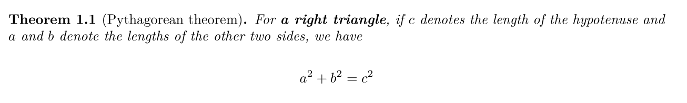

2020-12-21
Seasons greetings from the R Markdown family! We know many folks are headed into holiday breaks, and we hope you all take time away from work to enjoy…the rest of 2020. If you are like most people, you may be having a hard time keeping up with the latest news and current events in the world. We cannot help much with that (we’re in the same boat), but we are here to make your working lives easier! We wanted to take a moment to round up all the latest news from the R Markdown family of packages so that when you re-surface in 2021, you know all you need to know to take advantage of the newest features that will improve your knitting experience. Without further ado, let’s get started!
| Last release |
|---|
We are happy to share that rmarkdown (https://rmarkdown.rstudio.com/docs/) version 2.6 is now on CRAN. rmarkdown is a package that helps you create dynamic documents that combine code, rendered output (such as figures), and markdown-formatted text.
You can install rmarkdown from CRAN with:
install.packages("rmarkdown")There have been three new versions released on CRAN since this fall. Below we share some highlights, but you may want to look at the release notes for the full details.
An anchor link (also known as a “page jump”) can help you share the URL to a specific section of a web page. Anchor links can now easily be added to headers in html_document() by using anchor_sections = TRUE in your YAML. First introduced in rmarkdown v2.5 as TRUE by default, we reverted to FALSE following community feedback. In v2.6 and later, you can enable anchor links in your YAML header:
```{yaml}
output:
html_document:
anchor_sections: TRUE # default is FALSE
```This works for any HTML-based output format, including those from the bookdown package. The default symbol is a pound sign (#). You can customize the anchor link using CSS (see ?html_document()).
Automatically numbered sections have long been available in HTML and PDF output formats, but were missing from other output formats. It is now there! Users who knit to Word (word_document()), PowerPoint (powerpoint_presentation()), and markdown document (e.g., github_document()) output formats can now benefit from automatic numbering of sections, too. This new feature also makes it easier for your outputted report to look the same when you knit the same report to multiple output formats.
You can enable numbered sections in your YAML header:
```{yaml}
output:
word_document:
number_sections: TRUE # default is FALSE
```A new publish_site() function is now included to easily publish your R Markdown website, as the ‘One-Button’ publishing experience in the RStudio IDE. It will help you setup your environment for publishing, build your website and deploy to RStudio Connect. Under the hood, it uses the rsconnect package.
We also have made some smaller but important changes:
clean_site(preview = FALSE) has been changed to preview = TRUE, which means it will now show which files and folders to delete without actually deleting them. This will now be also the default behavior of ‘Clean All’ button in the IDE build pane. If you want to actually delete the files, you need to call rmarkdown::clean_site(preview = FALSE) in the R console.output_format() using pandoc_options(lua_filters = ). A new function pandoc_lua_filter_args() has been added to help build the right commandline argument for Pandoc. If you are new to Lua filters and want to learn more, see vignette("lua-filters", "rmarkdown").• See the release note for full list of changes.
| Last release |
|---|
We are also happy to share that bookdown (https://bookdown.org/yihui/bookdown/) version 0.21 is now on CRAN. bookdown is a package that facilitates writing books and long-form articles/reports with R Markdown.
You can install bookdown from CRAN with:
install.packages("bookdown")You always had the ability to number sections in HTML and PDF books (in fact, it was the default because it was so necessary), but because of the new feature described above added to rmarkdown, now you get your nice numbered sections in bookdown’s non-HTML output formats too, like bookdown::word_document2() or bookdown::powerpoint_presentation2().
This is especially helpful because bookdown’s output formats already have automatic figure numbering enabled (see: https://bookdown.org/yihui/rmarkdown-cookbook/figure-number.html). For example, this code chunk:
```{r cars, fig.cap = "An amazing plot", echo = FALSE}
plot(cars)
```In a bookdown output format is rendered as:

With the new section numbering capability, your numbered figures will be numbered by chapter even in output formats other than HTML and PDF. For example, in a word_document2, before the fourth figure of your document would have been labeled Fig. 4, even if it was really the second figure in Chapter 3. Now, the same figure will be labeled Fig. 3.2. If you prefer the former numbering behavior, you may deactivate this by setting number_sections: FALSE in the index.Rmd YAML or in your _output.yaml file.
You may already know (or not) that bookdown has special Markdown extensions, one of which is the theorems and proofs. They offer (un)numbered and labeled environments to your book. Currently, you can add them using one of the custom knitr’s engines:
```{theorem, pyth, name="Pythagorean theorem"}
For a right triangle, if $c$ denotes the length of the hypotenuse
and $a$ and $b$ denote the lengths of the other two sides, we have
$$a^2 + b^2 = c^2$$
```
Taking advantage of Pandoc fenced Divs to create custom blocks, now you have another way of creating such an environment:
```{markdown}
::: {.theorem #pyth name="Pythagorean theorem"}
For **a right triangle**, if $c$ denotes the length of the hypotenuse
and $a$ and $b$ denote the lengths of the other two sides, we have
$$a^2 + b^2 = c^2$$
:::
```
It will produce the same type of environment that you can reference in your book. However, we gain a very important feature-‐-with this new syntax, you can use any Markdown syntax inside the custom blocks, which was not possible using the knitr engine. Have you spotted the bold text in the last example?
This new syntax is currently only available to PDF and HTML document output formats. To use this new syntax in your existing documents, bookdown::fence_theorems() can help you convert the old syntax to the new syntax.
# Shows the converted text
bookdown::fence_theorems("01-intro.Rmd")
# Convert the document overwriting it
bookdown::fence_theorems("01-intro.Rmd", output = "01-intro.Rmd")• See the release note for full list of changes.
| Last release |
|---|
The latest version of the tinytex (https://yihui.org/tinytex/) package is also now on CRAN. tinytex is the companion package of the LaTeX distribution TinyTeX based on TeX Live, and the package allows R users to install and maintain their LaTeX distribution using R. You can install tinytex from CRAN with:
install.packages("tinytex")In September, we made an important package update with three main improvements that should make the installation process for users run smoother.
tinytex::install_tinytex() will now install pre-built binaries of TinyTeX by default, instead of installing TeX Live with its source installer. The latter is not only slower, but also could end up installing a cutting-edge version of TeX Live that happens to be broken. With the change, these problems will be gone, because the binaries have been fully tested for common R Markdown documents and projects before a new release is made, and they include a set of pre-installed TeX packages required by common R Markdown projects.tinytex::install_tinytex("2020.12"). The TinyTeX releases live in the repo https://github.com/yihui/tinytex-releases, where you could find the different versions. There will be a monthly release of 3 binaries for Linux, Windows and Mac. These binaries can also be used by non-R users (see the repo README for how to install for non-R users).tinytex::install_tinytex() will now detect and re-install all currently installed packages so that you don’t lose anything when re-installing or upgrading TinyTeX.• See the release note for full list of changes.
| Last release |
|---|
We are also happy to announce that rticles (https://github.com/rstudio/rticles) version 0.17 is now on CRAN. The rticles package provides a suite of custom R Markdown LaTeX formats and templates for journal articles. You can install rticles from CRAN with:
install.packages("rticles")Most of the article templates are provided and maintained by the community, and anyone can contribute a new template. Since this summer, three new versions of this package have been released on CRAN with:
New article formats available: bioinformatics_article() and arxiv_article()
Improved jss_article() and rjournal_article() article templates to better follow submission guidelines.
A brand new README to show all available templates with their contributor and to explain how to contribute more. The function rticles::journals() allows you to quickly look at all available formats.
A reorganization of the templates internally which led to a breaking change when using rmarkdown::draft(). Now, only the journal name needs to be provided (e.g., rjournal instead of rjournal_article):
rmarkdown::draft("MyArticle.Rmd", template = "rjournal", package = "rticles")Several bug fixes for existing templates and better support for Pandoc 2.11+
• See the release note for full list of changes.
| Last release |
|---|
In 2016, Wojciech Francuzik filed a feature request for self-contained xaringan slides. Over the years, several other users (notably, Jared Lander) requested the same feature. We are happy to announce that this has finally become possible since xaringan 0.18! With the option self_contained: true, your images and plots will be embedded in the .html output file.
```{yaml}
output:
xaringan::moon_reader:
self_contained: true
```We’d like to thank Susan VanderPlas for contributing the pull request to implement this feature.
• See the release note for full list of changes.
| Last release |
|---|
Finally, we are proud to announce that version 1.0 of the distill package is now on CRAN. The goal of the distill package is to provide an R Markdown-based output format optimized for online scientific and technical communication. You can install the latest version from CRAN:
install.packages("distill")In a post earlier this month, we shared some highlights from the latest version of the distill package, which now includes site-wide search, a built-in themer, a syntax highlighter optimized for accessibility, and downlit integration, to name a few features we are excited about.
• See the release note for full list of changes.
Let’s not forget other packages in the R Markdown family that have been updated within the last 6 months:
tufte is in version 0.9 now with mainly updates for Pandoc 2.11+ support and a new runningheader variable for setting it different than title. See Changelog
knitr is in version 1.30 now updated in September with, among internal and small changes, a set of new exported knitr::hooks_* functions. See Changelog
pagedown had 3 releases with mainly bug fixes but 2 new features. A new loa-title to set a title to the list of abbreviations and a news outline argument in pagedown::chrome_print() to generate a bookmarks outline in the PDF. See Changelog
blogdown had an important release with version 0.21 in October. It was just step one in a larger package overhaul that is planned for release in January 2021. Now three years old, the package is currently under heavy development to better support beginners, improve the quality of life for existing users, and offer Hugo support with a versioning system. Version 1.0 will deserve its own blog post - stay tuned! We will definitely appreciate it if you could test the development version with remotes::install_github("rstudio/blogdown"), and let us know if you have any feedback! See Changelog
We hope this round-up helps you start thinking about some new possibilities for your 2021 knitting projects. A big thank you to all the contributors who helped with these releases by discussing problems, proposing features, and contributing code. Happy holidays!